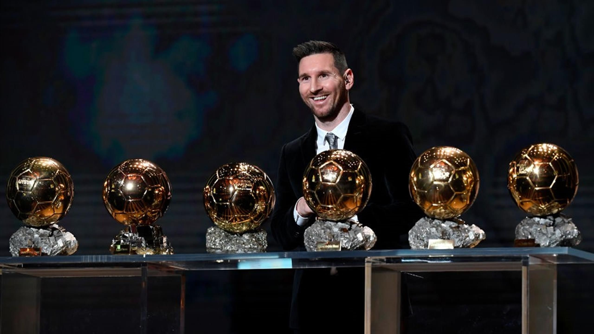

Traguardi
Lionel Messi è considerato uno dei calciatori più talentuosi e di successo di tutti i tempi, con una carriera ricca di premi e riconoscimenti.
1. Premi Individuali:
Pallone d’Oro: Messi ha vinto il Pallone d’Oro per il miglior giocatore dell'anno 8 volte (2009, 2010, 2011, 2012, 2015, 2019, 2021 e 2023), un record assoluto. Scarpa d’Oro Europea: Messi ha conquistato la Scarpa d’Oro per il maggior numero di gol nei campionati europei 6 volte (2010, 2012, 2013, 2017, 2018, 2019). Capocannoniere della Liga: Ha concluso 8 stagioni come miglior marcatore della Liga spagnola. Record di Gol in una Singola Stagione: Nel 2011-2012, Messi ha segnato 73 gol in una stagione tra tutte le competizioni.2. Premi Internazionali:
Miglior Giocatore della Copa América 2021 e 2024: Messi è stato premiato come miglior giocatore in entrambe le edizioni che ha vinto. Miglior Giocatore dei Mondiali 2014: Nonostante la sconfitta in finale, ha ricevuto il premio come miglior giocatore del torneo. Coppa del Mondo 2022: Messi ha vinto la Coppa del Mondo, cementando il suo status leggendario.3. Premi di Club:
Con il Barcellona, ha vinto 10 titoli della Liga, 4 Champions League, 7 Coppe di Spagna e numerosi altri trofei. Con il Paris Saint-Germain (PSG), ha contribuito alla vittoria del campionato francese. Con l’Inter Miami, ha portato visibilità e successo al club nella MLS. 